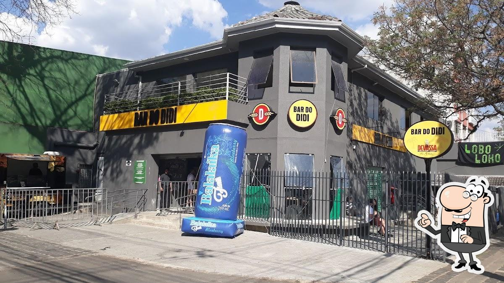

Quintal do Monge
Bar rústico e aconchegante com diversas cervejas artesanais da região, aperitivos e música ao vivo.

Cardápio
- Mandioca Supreme Cremosa
- Marguerita
- Salsicha do Alemão
Horário de Funcionamento
| Dia | Abertura | Fechamento |
|---|---|---|
| Segunda a Quinta | 17:00 | 01:00 |
| Sexta e Sábado | 17:00 | 01:00 |
| Domingo | 17:00 | 01:00 |
Veja mais no nosso Instagram.
Bar do Alemão
Bar e restaurante animado com loja de presentes, especializado em comida alemã e em ambiente de taverna.

Cardápio
- Chopp Submarino
- Carne de Onça
Horário de Funcionamento
| Dia | Abertura | Fechamento |
|---|---|---|
| Domingo a Quinta | 11:00 | 00:00 |
| Sexta e Sábado | 11:00 | 01:00 |
Veja mais no nosso Instagram.
Bar do Didi
O Bar do Didi é uma rede de bares bastante popular em Curitiba, conhecida por seu ambiente descontraído, cerveja gelada e clima animado.
Cardápio
- Litrão de Brahma
- Caipirinha de limão
- Batata Frita
- Carne de Onça
Horário de Funcionamento
| Dia | Abertura | Fechamento |
|---|---|---|
| Segunda a Quinta | 16:00 | 00:00 |
| Sexta e Sábado | 17:00 | 01:00 |
Veja mais no nosso Instagram.